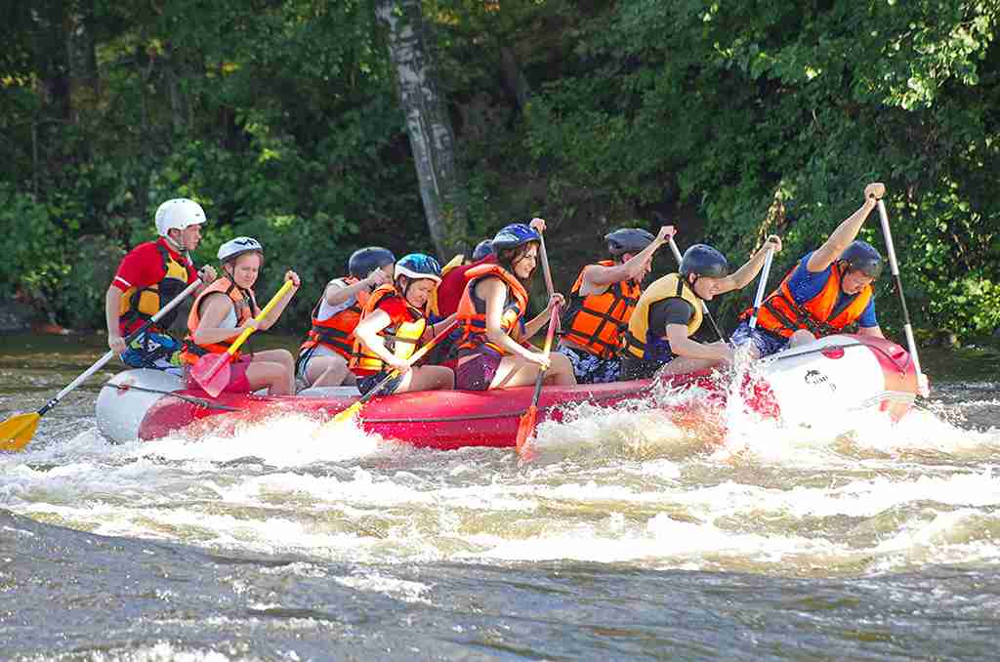

At Aqua Trail Rafting, adventure flows with every ripple. We are passionate about creating unforgettable white-water experiences that blend thrill, safety, and the beauty of nature. Our expert guides bring years of rafting knowledge, ensuring every journey down the river is both exhilarating and secure. Whether you're a first-time paddler or a seasoned adventurer, we craft moments that connect you with the outdoors, your team, and the sheer joy of the ride.